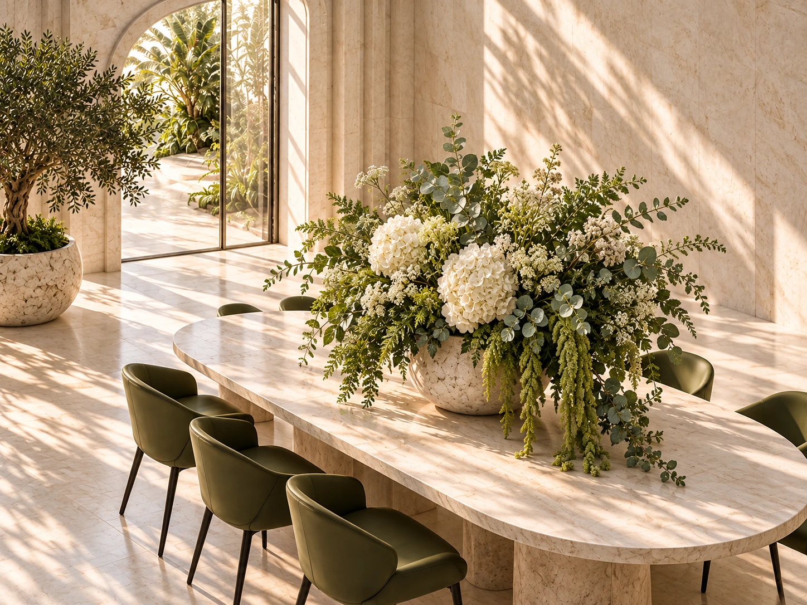
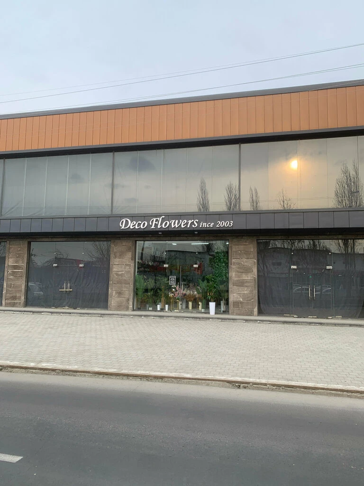

Самостоятельный акцент. Искусственные деревья для дома, офиса и общественных пространств.

Готовые композиции, декоративные деревья и вертикальная зелень. Выберите направление, с которого начнётся ваш интерьер.
Самостоятельный акцент. Искусственные деревья для дома, офиса и общественных пространств.

Цветы, зелень и сосуд как единое целое. Готовые композиции в вазах и кашпо разных цветов и дизайна.

Зелень в масштабе архитектуры. Декорация вертикальных фитостен и оформление интерьера под ключ.
Ассортимент DecoFlowers соединяет искусственную флористику, декоративную зелень и предметы для интерьера.

Арт-визуализация направленияИскусственные цветы и растения в вазах и кашпо. Готовые сочетания для стола, консоли или отдельного уголка интерьера.
Обсудить композициюДекоративные деревья для дома, офиса, магазина и клиники. Нужный размер и актуальное наличие можно уточнить в шоуруме.
Подобрать деревоЗелень для интерьера, офисов, кафе и ресторанов. От отдельного растения до сочетания нескольких форм.
Обсудить зеленьСосуды разных цветов и дизайнов — самостоятельные предметы и основа для готовых композиций.
Посмотреть варианты в шоурумеДекорация вертикальных фитостен и озеленение интерьера под ключ. Расскажите о пространстве, чтобы обсудить решение с командой.
Обсудить фитостенуВ шоуруме представлены книги, вазы и другие предметы для оформления интерьера. Ассортимент и наличие уточняются у DecoFlowers.
Уточнить ассортиментВ публикациях DecoFlowers — решения для частных и общественных пространств. Начните с того, как вы используете свой интерьер.
Дерево рядом с креслом, композиция на столе, зелень у окна. Рассмотрите отдельный предмет или оформление всего пространства.
Декоративные растения для рабочих пространств и зон ожидания. Обсудите с командой масштаб и характер вашего интерьера.
Искусственная зелень для гостевых зон. От композиции на столе до вертикального зелёного акцента.
Цветы, растения, вазы, книги и интерьерные аксессуары. Рассмотрите формы и сочетания рядом — так проще выбрать своё.


Для личного интерьера, проекта дизайнера или заказа для бизнеса. Состав заказа, наличие и условия обсуждаются с шоурумом.
DecoFlowers сообщает о доставке по всей Республике Узбекистан. Город, стоимость и сроки вашего заказа уточните перед оформлением.
Обсудить заказСвяжитесь с шоурумом по телефону или через Instagram. Каталог, актуальное наличие и цены необходимо подтвердить у DecoFlowers.
Расскажите о типе пространства, городе и желаемом направлении: дерево, готовая композиция или фитостена. Можно подготовить короткое описание ниже.
Да, DecoFlowers работает оптом и в розницу. Условия конкретного заказа согласуются с шоурумом.
Изображения интерьеров и ботанических деталей на этой странице — арт-визуализации направления. В разделе «Шоурум» используются настоящие фотографии DecoFlowers. Арт-визуализации не являются каталогом товаров или портфолио выполненных проектов.
Подготовьте описание для разговора с DecoFlowers. Его можно скопировать или скачать и передать команде по удобному каналу.
+998 90 019 09 01Instagram · @decoflowersuz